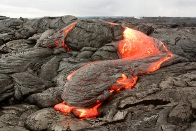

Tipo 01
Ígneas
Nascem do fogo. Formam-se pelo resfriamento e solidificação do magma (interior da Terra) ou da lava (na superfície). Quando esfriam devagar no subsolo, criam cristais grandes; quando esfriam rápido na superfície, ficam vítreas ou de cristais minúsculos.
Exemplos: Granito · Basalto · Obsidiana · Pedra-pomes